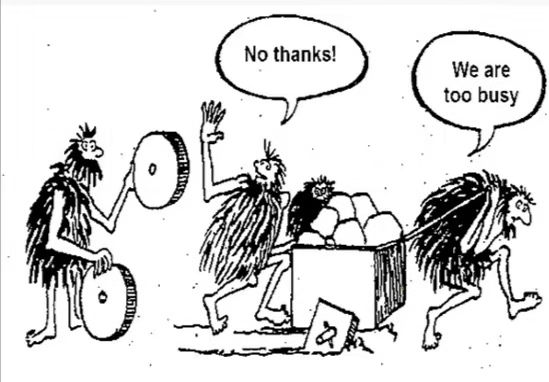

该死的轮子
王福强

相信这幅图大家都见过吧？ 很多程序员都会拿来讽刺团队里那些比自己傻逼的程序员，明明有更好的方法或者技术不用，还非得坚持自己原先那种傻逼的做事方式。
其实推而广之， 这种现象不单单只是在程序员的圈子里， 所有的圈层里其实都有这种现象，而这种现象也会持续存在…
我在《深度思考揭秘》（The Way Of Deep Thinking）中提到过，这个世界是分圈层和层级的， 现实里没有平等一说（天道是损有余而补不足， 人道不是，人间不是），这个是一个结果，不是原因。 原因就是，把一群人放到一个环境里去筛， 总会有高中低档之分， 上一层级的看下一层级其实都会觉得他们傻逼，但这个东西不是骂醒的， 上一层级之所以是上一层级是因为他们能够接受新的观念改变自己， 下一层级则不然，所以，这种现象出现也就不足为奇了。
在管理上我们说“你改变不了任何人”（嗯， 继续广告， 《扶墙老师的极简管理课》可以看下）， 一个人只有自己改变自己，绝对不会有说任由别人来改变自己， 如果有人觉得你改变了别人，那你就太自信了， 哪一天终究会被事实打一记响亮的耳光，因为你所谓改变了的那个人，可能只是短期内逆来顺受，改天伺机反击，毫不留恋。一个人只相信自己相信的东西， 所以， 如果一群原始人认为自己的方轮子就是最好的，那么， 他们是不会相信你的推销方案的，即使你认为是你为了他们好。
所以，做管理最难的就是， 你既要为他们好，还得用合适的方式和沟通举措来达到目的， 这其实就是比较尴尬的地方（因为你要饱含委屈地去为他们好，费劲巴力地想办法为他们好，心累不？），所以大多数时候，大多数人的选择是任其如此，只要求目标和结果就好了， 至于怎么做事，那是每个人自己的能力和认知决定的， 不要过多干涉。 记住，你改变不了任何人，除了你自己！
如果你还是要为了他们好，那么，抱怨和讽刺其实是最差的策略！ 换种方式吧！
另一种情况就是， 为了他们好，其实也是为自己好，所谓“你好，我好，大家好”，为啥呢？ 我经常举的一个栗子是， 假设你团队成员手里每人都有一把实弹上了膛的枪，彼此站在自己的身前身后，你害怕不害怕？ 你们没有切身感受不一定害怕，但我怕，我怕谁tnd不小心扣了扳机或者走火，就把我给崩了，不管他是有意无意。
但是我既然要让团队打仗有战斗力，就不可能采用给他们卸掉子弹、卸掉装备的策略， 这样团队就更弱了。 既要让团队有战斗力，还要团队内部不把子弹射向自己， 最好的策略就是教育他们、培训他们、让他们成长（Teach them， Train them， Raise them）， 而不是放任自流甚至挖苦讽刺。
当然，更有那么一小搓儿人， 教书育人， 一心向善， 真心实意苦口婆心地为别人好，这样的也是有的，这样的人更值得尊敬。

Anyway， 人是复杂的，多样的， 但人性也是想通的， 抱怨不解决问题，抱怨只会让事情朝着你预期相反的方向狂奔，别做那个傻逼，你瞧他人是傻逼，他人瞧你也如是 -
「为AI疯狂」星球上，扶墙老师正在和朋友们讨论有趣的AI话题，你要不要⼀起来呀？^-^
这里
- 不但有及时新鲜的AI资讯和深度探讨
- 还分享AI工具、产品方法和商业机会
- 更有体系化精品付费内容等着你，加入星球(https://t.zsxq.com/0dI3ZA0sL) 即可免费领取。(加入之后一定记得看置顶消息呀！)

存量的时代，省钱就是赚钱。
在增量的时代，省钱其实是亏钱。
避坑儿是省钱的一种形式，更是真正聪明人的选择！
弯路虽然也是路，但还是能少走就少走，背后都是高昂的试错成本。
订阅「福报」，少踩坑，少走弯路，多走一步，就是不一样的胜率！